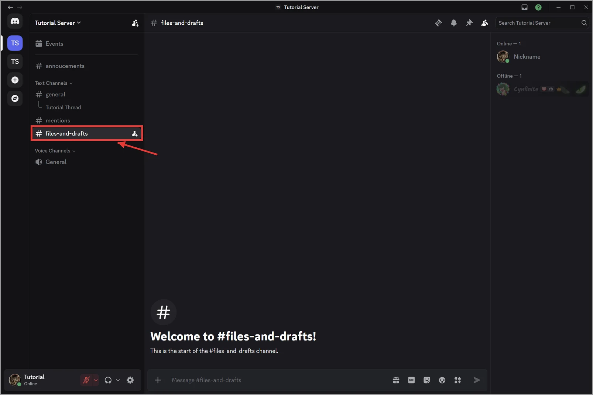
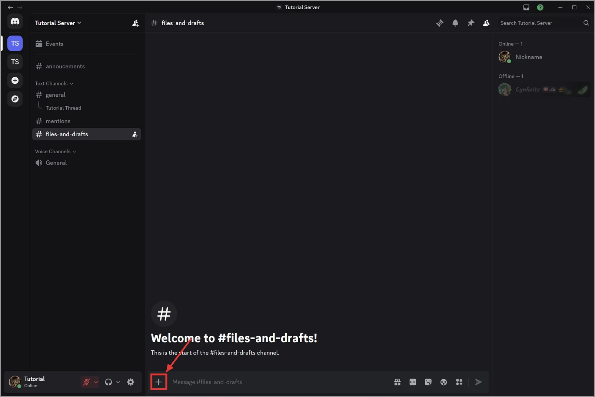
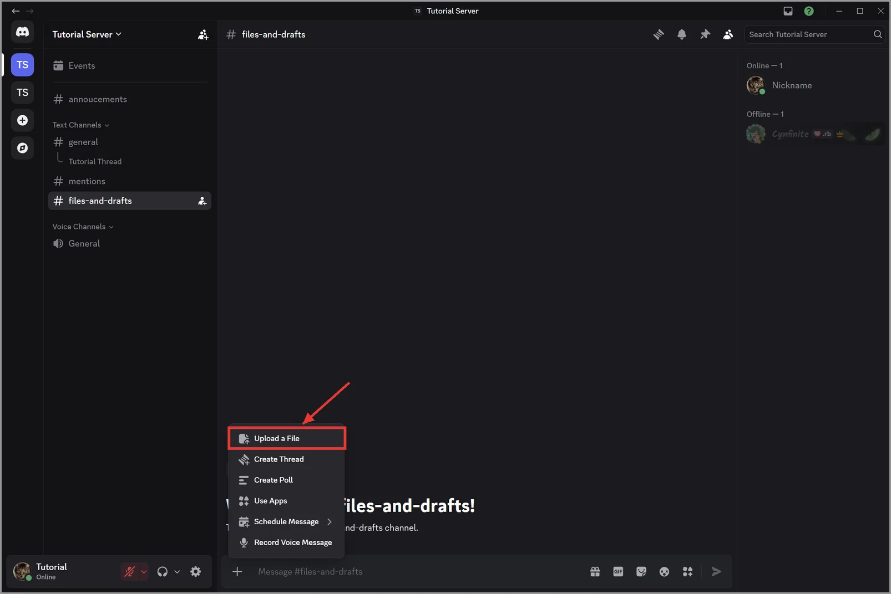
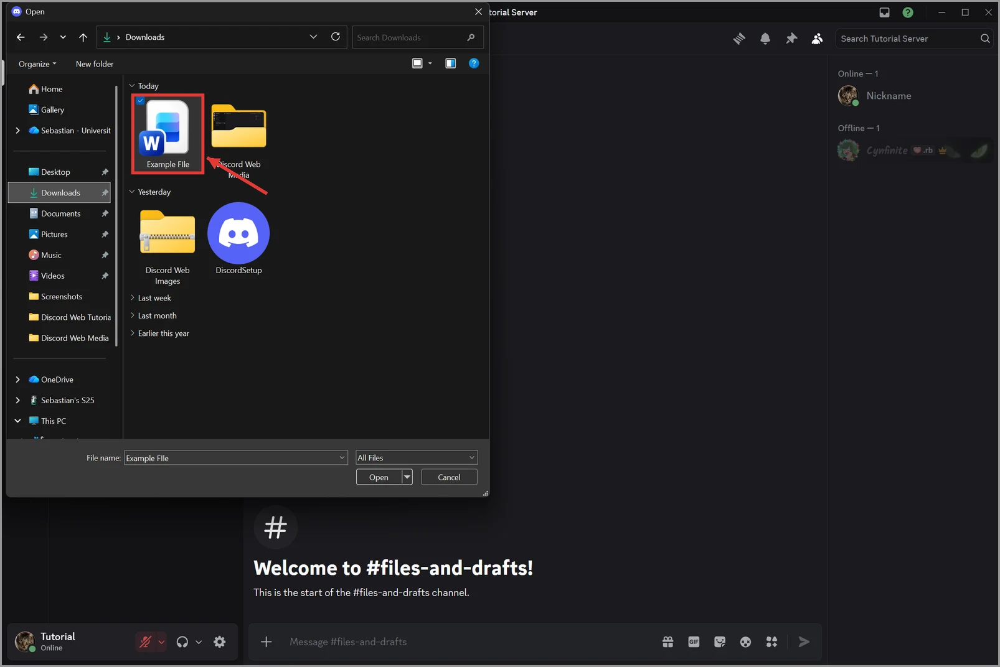
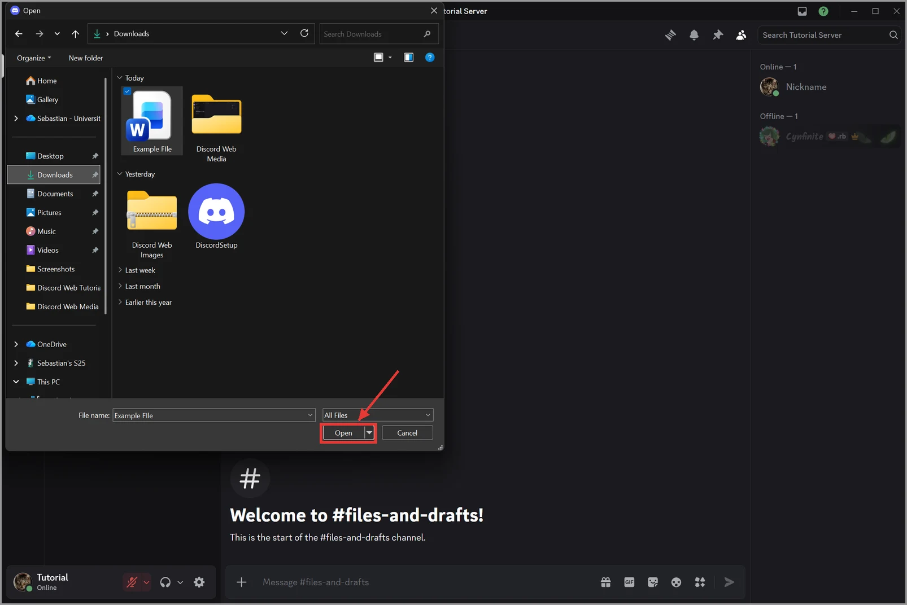
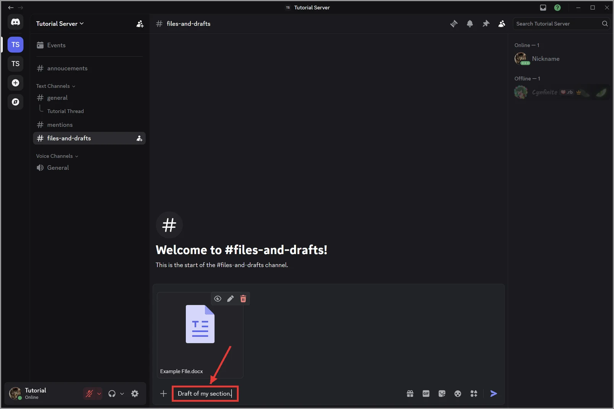
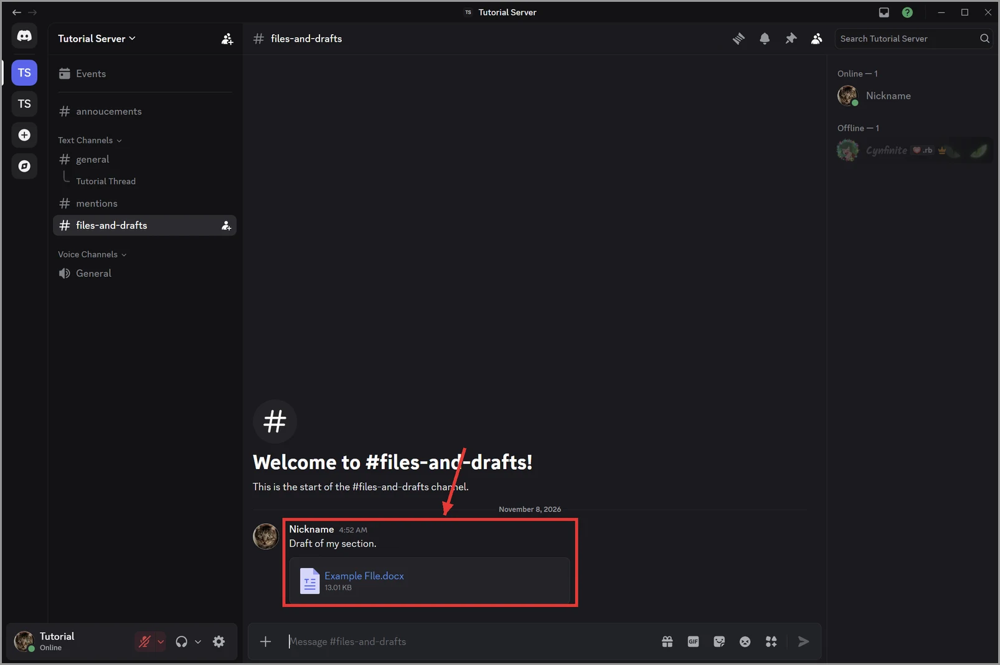
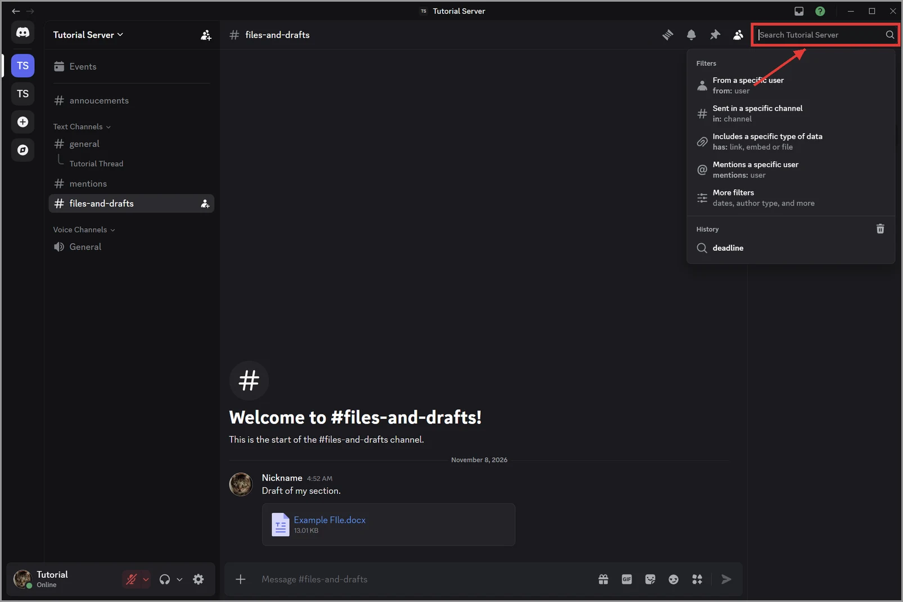
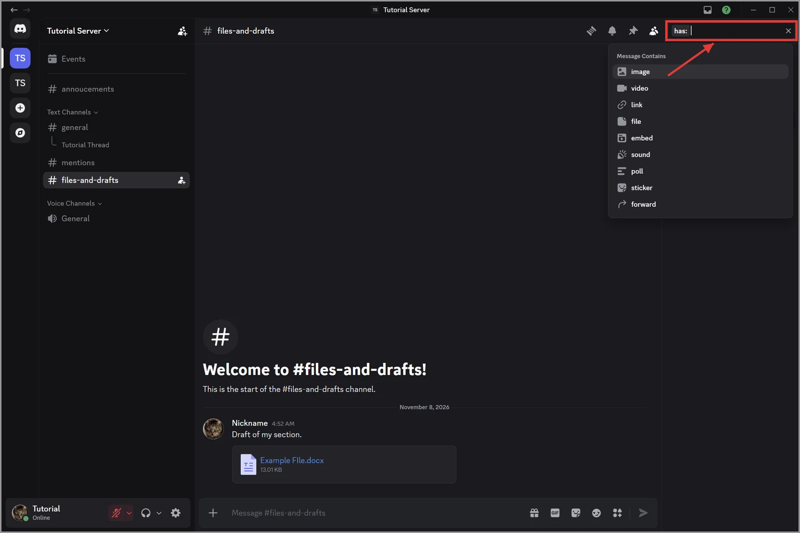
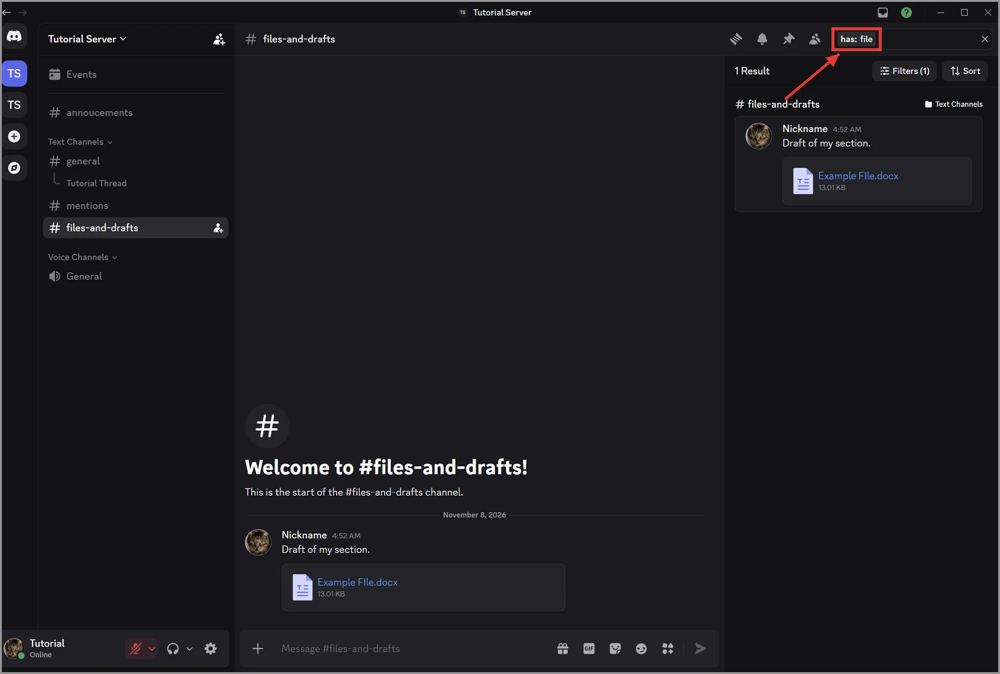

5.4 Sharing and Finding Files
Group projects depend on drafts, slides, and images. This page shows you how to share an attachment and how to find files your group already shared.
Upload a file
- Open the channel where your group shares files, such as #files-and-drafts.

Figure 5.4.1: Opening the #files-and-drafts channel - Click the plus button on the left side of the message box.

Figure 5.4.2: The plus button on the left side of the message box - Click Upload a File.

Figure 5.4.3: Upload a File in the plus button menu - Choose the file on your computer.

Figure 5.4.4: Choosing a file in the Open window - Click Open.

Figure 5.4.5: The Open button in the Open window - Type a short message that explains the file, such as "Draft of my section."

Figure 5.4.6: Typing a short message that explains the file - Press Enter.

Figure 5.4.7: The message and file in the channel after pressing Enter
Result: The file appears in the channel, and teammates can open or download it.
Find files later
- Click the Search box at the top-right of the window.

Figure 5.4.8: The Search box at the top-right of the window - Type has: in the Search box.

Figure 5.4.9: Typing has: in the Search box - Click file in the list.

Figure 5.4.10: The file filter in the Search box, with the message that includes the file - Press Enter.
Image, Gif or Video will go here
Figure 5.4.11
Result: Discord lists every message in the server that includes a file, with the newest first.